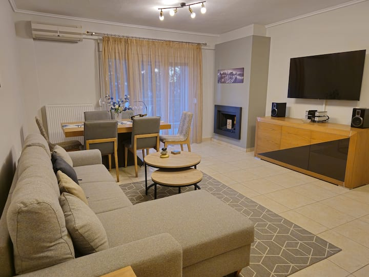

Panoramic View Apartment
Solun, pored Sajma. Panoramski pogled na ceo grad.
do 6 osoba · 2 spavaće sobe · 2 kreveta · 1 kauč na razvlačenje · 1 kupatilo · 60 m²

Izaberite smeštaj i rezervišite preko Booking.com ili Airbnb-a, ili nas kontaktirajte direktno telefonom ili e-mailom.
Gradski apartmani blizu mora i centra.
Solun, pored Sajma. Panoramski pogled na ceo grad.
do 6 osoba · 2 spavaće sobe · 2 kreveta · 1 kauč na razvlačenje · 1 kupatilo · 60 m²
Bulevar Vasilisis Olgas, Solun. Moderan stan od 78 m² na Vasilisis Olgas, blizu mora.
do 6 osoba · 2 spavaće sobe · 2 kreveta · 1 kupatilo · 78 m²

Pilea, Solun. Prostran dom od 87 m² u mirnom kraju, sa besplatnim parkingom.
do 5 osoba · 2 spavaće sobe · 2 kreveta · 1 kupatilo · 87 m²

Miran boravak u Zapadnoj Makedoniji, među starim vilama i vinogradima.
Sjatista, Kozani. Dve spavaće sobe i velika privatna terasa.
do 6 osoba · 2 spavaće sobe · 2 kreveta · 1 kauč na razvlačenje · 1 kupatilo · 60 m²

Sjatista, Kozani. Prostrana kuća od 110 m², pored trga.
do 8 osoba · 3 spavaće sobe · 4 kreveta · 2 kauča na razvlačenje · 1 kupatilo · 110 m²